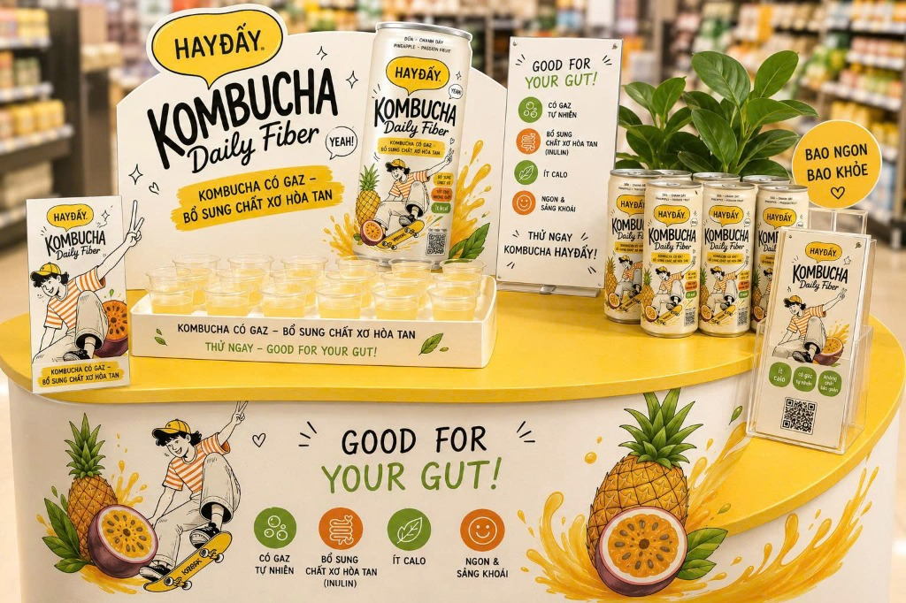

Sống Chất
Bật Chất GEN Z
HAYĐẤY Kombucha là bước đột phá chiến lược của Vinamilk, kết hợp nghệ thuật lên men trà truyền thống với xu hướng đồ uống chức năng bổ sung chất xơ hòa tan dành riêng cho nhịp sống hiện đại.
38
Calories / Lon 250ml
1.9g
Chất xơ Inulin

Tổng Quan Vinamilk & Cơ Hội Thị Trường
Phân tích bối cảnh tiêu dùng, xu hướng sức khỏe Gen Z và cơ hội bứt phá trong ngành hàng Kombucha tại Việt Nam.
Doanh thu hợp nhất (VND), các dòng sản phẩm mới tăng trưởng hai chữ số.
Quy mô thị trường 2025, dự báo tăng trưởng 6.8%/năm đến 2031 (Ken Research).
Quy mô tại VN (2024-2025), tăng trưởng kép 13-15%/năm đến 2033 (Grand View Research).
Thường xuyên dùng đồ uống ngoài quán, ưu tiên giá trị & giảm đường (PwC 2025).
1.1 Năng Lực Nền Tảng Vinamilk
Vinamilk sở hữu kinh nghiệm dày dặn trong sản xuất sữa chua, thức uống lên men và thực phẩm bổ sung. Với hệ thống R&D nội bộ mạnh mẽ cùng mạng lưới phân phối phủ rộng cả nước, dòng sản phẩm HAYĐẤY kombucha có gaz lên men chậm chính thức ra mắt năm 2025, tạo nền tảng vững chắc để mở rộng ngành hàng đồ uống chức năng 2026.
1.2 Khoảng Trống Thị Trường & Thuế
Chính sách thuế tiêu thụ đặc biệt đồ uống có đường (dự kiến 8% từ 2027 và 10% từ 2028) buộc doanh nghiệp tái cấu trúc công thức. Phân tích đối thủ cho thấy hầu hết các sản phẩm kombucha hiện có chỉ tập trung vào probiotic thông thường. Khảo sát khẳng định chưa có sản phẩm nào kết hợp Kombucha có gaz với Chất xơ hòa tan Inulin trong lon 250ml tiện lợi — đây là khoảng trống định vị vàng cho HAYĐẤY.
4 Nguồn Hình Thành Ý Tưởng Sản Phẩm
Ý tưởng HAYĐẤY Daily Fiber được tổng hợp và chiết xuất từ 4 yếu tố cốt lõi.
Nhu Cầu KH
Gen Z cần đồ uống nhỏ gọn, mang theo tiện lợi, có gaz sảng khoái, vị thanh nhẹ ít ngọt và phù hợp nhịp sống ăn uống năng động.
Xu Hướng Thị Trường
Ưu tiên dòng ít đường, bổ sung dưỡng chất, đóng gói lon 250ml dùng 1 lần, đón đầu làn sóng thuế tiêu thụ đặc biệt đồ uống có đường.
Năng Lực Vinamilk
Tận dụng thế mạnh R&D lên men trà, nhận diện thương hiệu HAYĐẤY sẵn có, kênh phân phối phủ rộng và năng lực Sampling quy mô lớn.
Phân Tích Đối Thủ
Khai phá khoảng trống độc quyền: Chưa có sản phẩm trên thị trường kết hợp định dạng **Kombucha có gaz + Chất xơ hòa tan Inulin**.
Kết Quả Sàng Lọc & Lựa Chọn Ý Tưởng
Bảng 2: Ma trận chấm điểm sàng lọc 4 ý tưởng thuộc dòng HAYĐẤY (Thang điểm 1–5)
| Ý tưởng | Nhu cầu KH (25%) | Năng lực (20%) | Khác biệt (20%) | Tiềm năng (15%) | Sản xuất (10%) | Rủi ro (10%) | Điểm tổng |
|---|---|---|---|---|---|---|---|
| 🏆 Daily Fiber Winner | 5 | 4 | 5 | 4 | 3 | 4 | 4,35 |
| Tropical | 4 | 4 | 3 | 4 | 4 | 5 | 3,90 |
| Focus | 3 | 3 | 4 | 3 | 3 | 3 | 3,20 |
| Sharing | 3 | 4 | 2 | 3 | 4 | 4 | 3,20 |
2.4. Lý Do Lựa Chọn HAYĐẤY Daily Fiber
HAYĐẤY Daily Fiber đạt điểm số cao nhất (4,35/5.00) vì giải quyết một nhu cầu cụ thể và cấp thiết hơn so với kombucha thông thường. Sản phẩm tiên phong kết hợp hai thuộc tính cốt lõi: Kombucha có gaz lên men tự nhiên và Chất xơ hòa tan Inulin (1.9g), tạo sự khác biệt nổi bật trong danh mục HAYĐẤY, hoàn toàn phù hợp định hướng mở rộng sản phẩm giá trị gia tăng của Vinamilk.
Hệ sinh thái Daily Series
Bộ sưu tập 4 hương vị thiết kế riêng cho từng thời điểm trong ngày của bạn.


Daily Fiber
Bản Chất Thật
Sự minh bạch trong thành phần là cam kết từ Vinamilk. Daily Fiber sử dụng nước ép dứa và chanh dây thật, kết hợp cùng 1.9g chất xơ hòa tan Inulin.
Cấu trúc dinh dưỡng (250ml)
Trải nghiệm Thực tế
HAYĐẤY đồng hành cùng bạn tại các kệ hàng và sự kiện Activation trên toàn quốc.

Booth Trưng Bày & Bán Hàng

Trưng bày tại điểm bán

Hoạt động dùng thử & Tư vấn